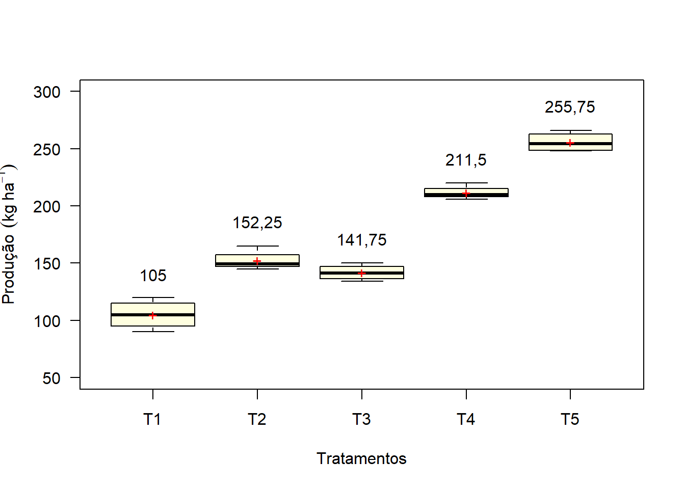
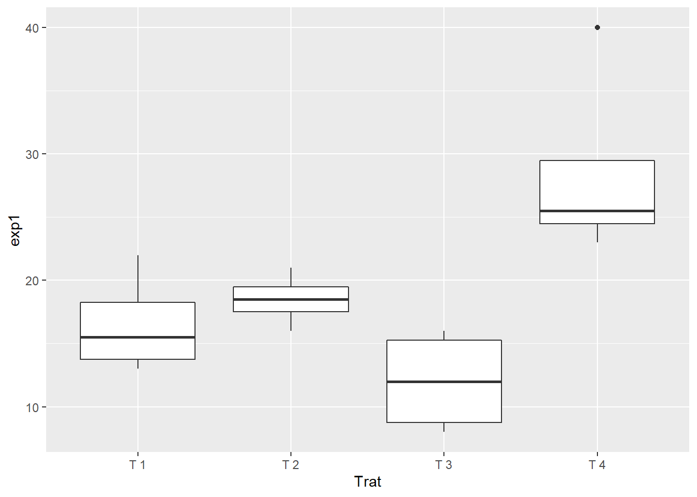
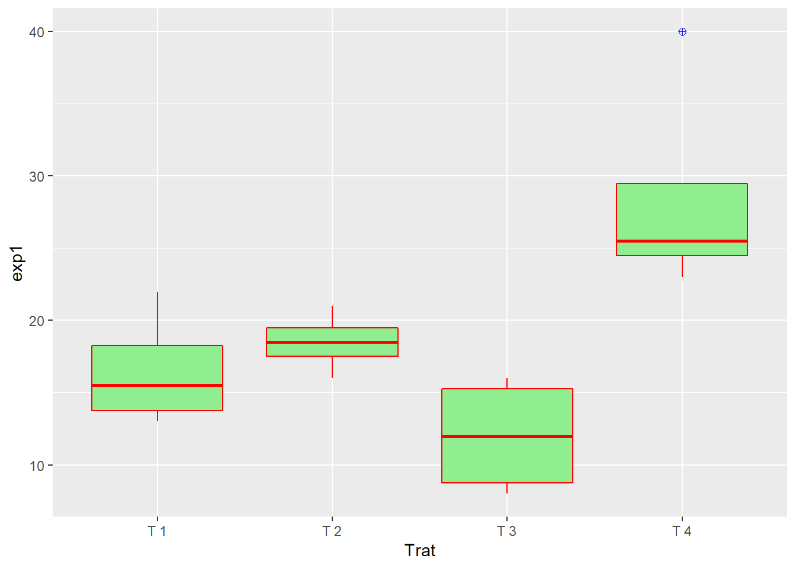
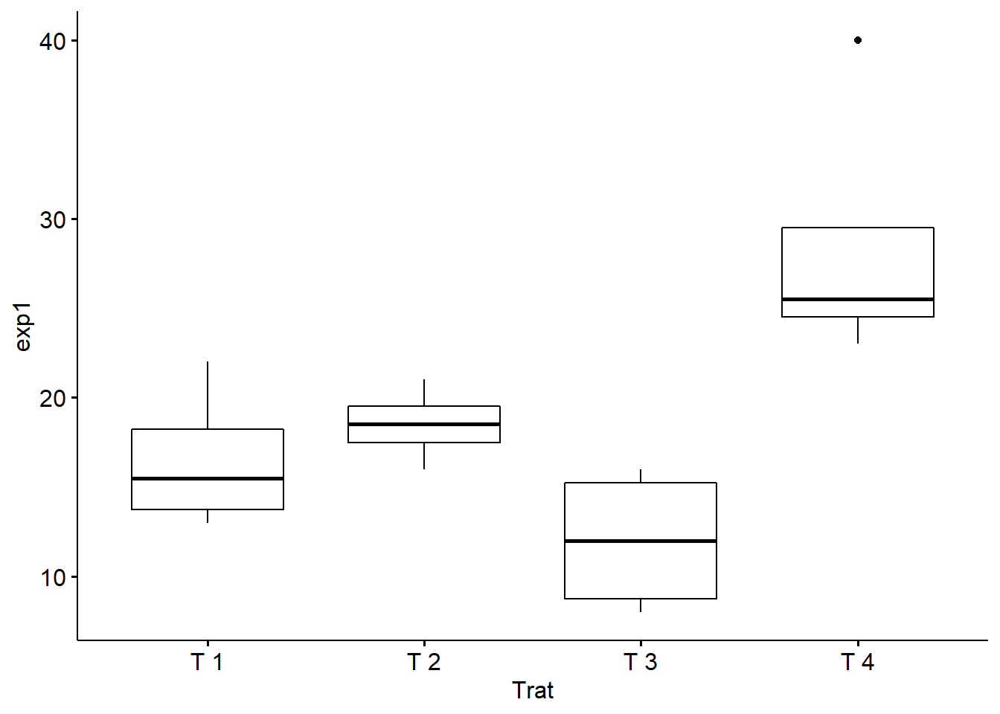
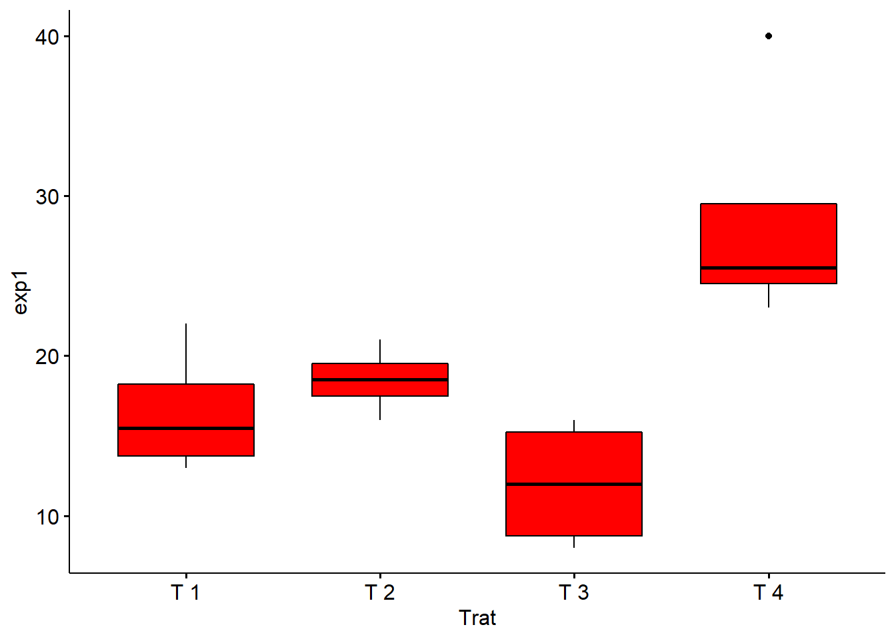
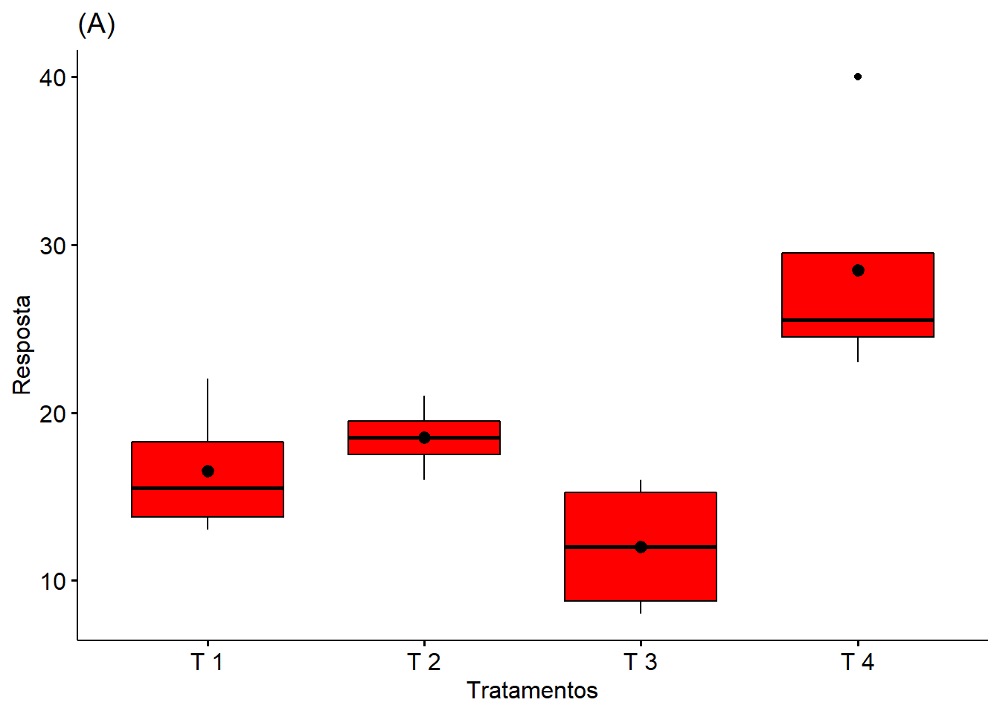

4 Caixas (Boxplot)
O boxplot (gráfico de caixa) é um gráfico utilizado para avaliar a distribuição empírica do dados. O boxplot é formado pelo primeiro e terceiro quartil e pela mediana. As hastes inferiores e superiores se estendem, respectivamente, do quartil inferior até o menor valor não inferior ao limite inferior e do quartil superior até o maior valor não superior ao limite superior. Os limites são calculados da forma abaixo
Limite inferior: \(\max\{\min(\text{dados});Q_1-1,5(Q_3-Q_1)\}\).
Limite superior: \(\min\{\max(\text{dados});Q_3+1,5(Q_3-Q_1)\}\).
Para este caso, os pontos fora destes limites são considerados valores discrepantes (outliers). A Figura a seguir apresenta um exemplo do formato de um boxplot.

Existem várias formas de entrada ou leitura de dados no R. Para um conjunto de dados pequeno, pode-se entrar com as informações diretamente no console do programa. Considere um delineamento inteiramente ao acaso com 5 tratamentos e 4 repetições. A entrada dos dados, entre outras, poderia ser da forma:
tratamentos=rep(c(paste("T", sep='', 1:5)), each=4)
resposta = c(100, 120, 110, 90, 150, 145, 149, 165, 150, 144, 134, 139, 220, 206, 210, 210, 266, 249, 248, 260)
## Médias e Desvioss-padrão (por Tratamento)
(Médias = tapply(resposta, tratamentos, mean))## T1 T2 T3 T4 T5
## 105,00 152,25 141,75 211,50 255,75(Desvios = tapply(resposta, tratamentos, sd))## T1 T2 T3 T4 T5
## 12,909944 8,770215 6,849574 5,972158 8,732125boxplot(resposta ~ tratamentos)
# Ou, pode-se usar o comando ``Boxplot`` do pacote ``car``
require(car)
Boxplot(resposta ~ tratamentos)Uma vantagem do comando Boxplot é que se houver outlier, ele já identifica a pposição do elemento discrepante.
4.0.1 Melhorias
boxplot(resposta ~ tratamentos,
las=1,
col="lightyellow",
xlab="Tratamentos",
ylab="Resposta",
ylim=c(0,300))
Comandos usados:
las=1: mostrar a escala do eixo no sentido horizontal;col="cor": mudar a cor das colunas (Ex. “red,” “blue,” “green” ougray.colors(quantidade de tonalidades) para escala cinza ourainbow(quantidade de cores) para escala colorida. Também é possível especificar a cor de cada coluna (col=c(“red,” “green,” “yellow,” “gray,” “blue”)));xlabeylab: nomear os eixos \(X\) e \(Y\);xlimexlim: mudar as escalas dos eixox \(X\) e \(Y\);
4.0.2 Plotando médias
boxplot(resposta ~ tratamentos,
las=1,
col="lightyellow",
xlab="Tratamentos",
ylab="Resposta",
ylim=c(50,300))
points(Médias, pch='+', col="red")4.0.3 Unidade do eixo Y
Caso a variável resposta seja Produção (\(kg/ha\)), inclui-se tal informação usando-se o comando expression.
boxplot(resposta ~ tratamentos,
las=1,
col="lightyellow",
xlab="Tratamentos",
ylab=expression("Produção"~~(kg~ha^-1)),
ylim=c(50,300))
points(Médias, pch='+', col="red")4.0.4 Limites superior e inferior
limites = tapply(resposta, tratamentos, boxplot.stats)
superior=c(limites$`T1`$stats[5],
limites$`T2`$stats[5],
limites$`T3`$stats[5],
limites$`T4`$stats[5],
limites$`T5`$stats[5])4.0.5 Média acima das barras
boxplot(resposta ~ tratamentos,
las=1,
col="lightyellow",
xlab="Tratamentos",
ylab=expression("Produção"~~(kg~ha^-1)),
ylim=c(50,300))
points(Médias, pch='+', col="red")
text(c(1:5), superior + 10, Médias)
4.0.6 Separação de casa decimal
options(OutDec=",")
boxplot(resposta ~ tratamentos,
las=1,
col="lightyellow",
xlab="Tratamentos",
ylab=expression("Produção"~~(kg~ha^-1)),
ylim=c(50,300))
points(Médias, pch='+', col="red")
text(c(1:5), superior + 20, Médias)
4.0.7 Letras do teste de comparação
tukey=c("d","c","c","b","a")
options(OutDec=",")
boxplot(resposta ~ tratamentos,
las=1,
col="lightyellow",
xlab="Tratamentos",
ylab=expression("Produção"~(kg~ha^-1)),
ylim=c(50,300))
points(Médias, pch='+', col="red")
text(c(1:5), superior + 20, paste(round(Médias, 0), tukey))
4.1 Pacote ggplot2
Vamos trabalhar com um experimento em DIC com quatro tratamentos e quatro repetições cada.
exp1=c(17,22,13,14,18,19,16,21,9,16,15,8,25,26,23,40)
Trat=rep(c(paste("T",1:4)),e=4)
dados=data.frame(Trat,exp1)
dados$Trat=as.factor(Trat)Obs. Para facilitar, vamos realizar a análise direto pelo pacote ExpDes.pt (é necessário instalar o pacote)
4.1.1 Análise de variância
ExpDes.pt::dic(Trat,exp1)4.2 Utilizando o ggplot2
library(ggplot2)4.2.1 Gráfico básico
ggplot(dados,
aes(x=Trat,y=exp1))+
geom_boxplot()
4.2.2 Modificando cores
ggplot(dados,
aes(x=Trat,y=exp1))+
geom_boxplot(fill="lightgreen", # Cor da caixa
colour="red", # cor do contorno
outlier.colour = "blue", # Cor do contorno do outlier
outlier.shape = 10, # Formato do ponto do outlier
outlier.size = 2) # Tamanho do outlier
4.2.3 Cor por tratamento
ggplot(dados,
aes(x=Trat,y=exp1))+
geom_boxplot(aes(fill=dados$Trat))
4.2.4 Nome dos eixos
ggplot(dados,
aes(x=Trat,y=exp1))+
geom_boxplot(fill="lightgreen",
colour="red",
outlier.colour = "blue",
outlier.shape = 10,
outlier.size = 2)+
ylab("Resposta")+
xlab("Tratamentos")
4.2.5 linha de grade e cor de fundo
ggplot(dados,
aes(x=Trat,y=exp1))+
geom_boxplot(fill="lightgreen",
colour="black",
outlier.colour = "blue",
outlier.shape = 10,
outlier.size = 2)+
ylab("Resposta")+
xlab("Tratamentos")+
theme_bw()+
theme_classic()
4.2.6 Letras do teste de Tukey
Obs. Neste exemplo vamos adicionar as letras abaixo das caixas e alinhado em y=1
a=data.frame(Trat=levels(as.factor(Trat)), # Deve ter o mesmo da variável
exp1=c(1,1,1,1), # esse 1 é para Y=1
letra=c("b","ab","b","a"))
ggplot(dados,
aes(x=Trat,y=exp1))+
geom_boxplot(fill="lightgreen",
colour="black",
outlier.colour = "blue",
outlier.shape = 10,
outlier.size = 2)+
ylab("Resposta")+
xlab("Tratamentos")+
theme_bw()+
theme_classic()+
geom_text(data = a, aes(label = letra))
4.3 Package ggpubr
library(ggpubr)
ggboxplot(dados, # data.frame com os dados e tratamentos
'Trat', # Nome do tratamento entre aspas
'exp1') # Nome da resposta
4.3.1 Cor da caixa
ggboxplot(dados,
'Trat',
'exp1',
fill="red")
4.3.2 Cor de contorno
ggboxplot(dados,
'Trat',
'exp1',
fill="red",
color = "blue")4.3.3 Inserindo título
ggboxplot(dados,
'Trat',
'exp1',
fill="red",
color = "blue",
title="(A)")
4.3.4 Nome dos eixos X e Y
ggboxplot(dados,
'Trat',
'exp1',
fill="red",
color = "black",
title="(A)",
xlab="Tratamentos",
ylab="Resposta")
4.3.5 Ponto da média
ggboxplot(dados,
'Trat',
'exp1',
fill="red",
color = "black",
title="(A)",
xlab="Tratamentos",
ylab="Resposta",
add="mean")
Obs. Podemos usar ao invés de "mean", os seguintes argumentos:
mean_se: Média e erro padrãomean_sd: Média e desvio-padrãomean_ci: Média e intervalo de confiançamedian: Medianapoint: pontos referente às observações
Para mais informações consultar atráves de: desc_stat
4.3.6 Letras do teste de Tukey
a=data.frame(Trat=levels(as.factor(Trat)),
exp1=c(1,1,1,1), # Deve ter o mesmo da variável
# esse 1 é para Y=1
letra=c("b","ab","b","a"))
ggboxplot(dados,
'Trat',
'exp1',
fill="red",
color = "black",
title="(A)",
xlab="Tratamentos",
ylab="Resposta",
add="mean",
ylim=c(0,40))+
geom_text(data = a, aes(label = letra))